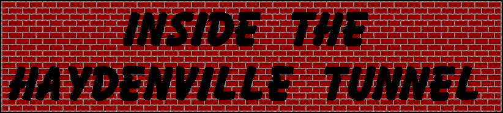
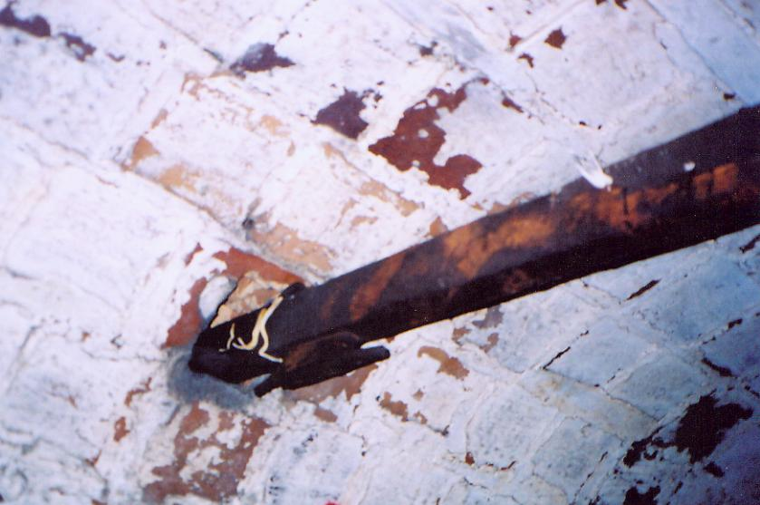

If you descend into the ravine behind Haydenville Cemetery, you'll find the arched entryway to a brick tunnel which runs southeast, beneath the wooded ridge. Aside from being an absolutely fascinating backwoods piece of forgotten Ohio, the tunnel is famously the haunt of numerous ghosts and specters left over from the time when the Mining and Manufacturing Company (later National Fireproofing) used it to retrieve clay which they blasted into tile and brick.
Peter Hayden's Mining and Manufacturing Company was a dangerous place to work, no doubt about it. No more dangerous than the average heavy-manufacturing plant in the nineteenth century, it's true, but that's not saying much. In the years before progressivism, factory workers labored in firetrap buildings, steelworkers balanced on catwalks above cauldrons of molten metal, and miners braved frequent cave-ins and breathed thick coal dust--all on twelve- and fourteen-hour shifts. Children did the same. Companies paid poverty wages and used the company store to enslave their workers. It wasn't until the reforms of the two Roosevelt eras, reforms which broke up all-powerful industrual combinations and strengthened labor unions, that things began to change. But people had always died on the job, especially in a dangerous place like a brick and tile furnace, and especially during the time when Haydenville was building itself up in the late 1800s. The ghosts that occupy this tunnel are said to be those of the victims of industrial accidents at the Haydenville brick works.
Passing under the arch and going into the tunnel, it at first looks like the way is blocked by a fall of bricks, but all you have to do is climb over (carefully, of course) and it's fairly unobstructed again.
Not much farther in, the arched passageway drops suddenly about three feet. This part is cluttered with fallen bricks as well; once you've ducked under the lower arch you can climb down them like a staircase and you're in a narrower passageway, but still plenty tall enough to stand up in. There are some places where the wall has collapsed, both the glazed inner surface bricks and the cinderblock reinforcing partially obstructing the way. Despite this it all seems pretty sturdy in a here-and-now kind of way--nothing that's going to fall down on your head because you bumped against the side.
Every so often a metal strut beam spans the passageway right below the curve of the arch. They're rusty and filthy but still solid-looking, for the most part. One weird thing about the crossbars is the bizarre albino fungus that grows from some of them. Is this fungus, or is it some kind of stalactite growing in the dark wetness down here?

It definitely is dank and dark and echoey down here, and it's more than a little cold. You can see your breath, partially because of the temperature but also because of the dampness. The girls and I explored the tunnel in August, and we could see every single exhalation. I learned to hold my breath before snapping a picture, but only after illuminating a few clouds that I'm sure some people will think are ghosts. So before you write to me that I've got spirit photographs in my Haydenville Tunnel section, hear me now: That's our breath. Seriously.
Far enough in, the tunnel becomes rectangular, losing the arched brick ceiling for what looks like wooden boards. Surprisingly there aren't any cave-ins along the way.
Vaguely discernible through the thin mud are a set of metal handcart tracks. The workers at the brick factory pushed carts back and forth on this miniature rail line, retrieving clay from the riverside clay pit near the other end of the tunnel.
Periodically along the way there are vent-like recesses in the walls, apparently there to provide some small amount of fresh air to the folks laboring underground here. They're blocked off now, and believe me, the air is not nice. There is a lot of standing water on the bottom of the passageway, and the air couldn't be more damp.
Eventually the tunnel does end, seemingly in a very solid cave-in. I'm only surprised that the ceiling didn't give before this, if that is what happened here. It looks like there might be a very small gap at the top of the pile of rocks and earth that blocks the way, but it's too small to fit through, and the tunnel floods deeper than anywhere in the final stretch.
This is an incredible find, and I encourage you to check it out for yourself, whether you're interested in haunted places or historical relics. I am far from the first person to visit it, however; we saw graffiti on the walls the entire way through, and other websites have sections dedicated to it and the ghosts said to inhabit it. We didn't see or hear anything particularly out of the ordinary on our trip through the tunnel, but I'd imagine that a night trip would be far scarier. Try it and let me know, or just e-mail me if you have anything to add.
Back